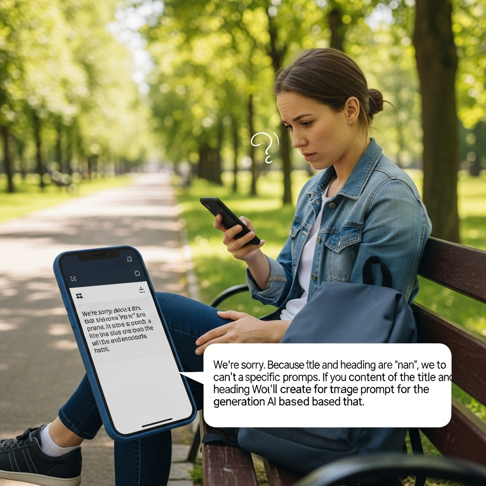
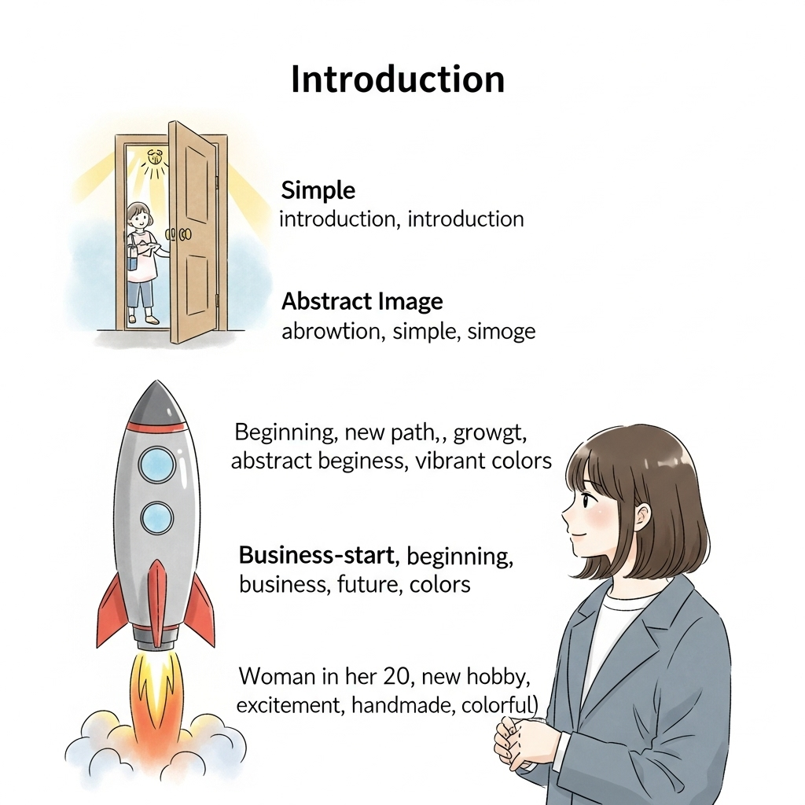

現代社会における心の豊かさと持続可能な幸福の探求：真の充実を見つける旅

導入

私たちは今、かつてないほどに物質的な豊かさを享受し、情報化の波に乗り、地球上のあらゆる場所と瞬時に繋がれる時代を生きています。高層ビルが立ち並び、テクノロジーが日進月歩で進化する現代社会は、私たちに無限の可能性と利便性をもたらしてくれました。しかし、その一方で、私たちの心は本当に満たされているでしょうか。
経済的な成功や社会的な地位、あるいはSNSで「いいね」の数を競うことに追われる中で、ふと立ち止まり、心の奥底で「本当にこれで良いのだろうか」という問いがよぎることはありませんか。情報過多による疲弊、終わりのない競争、そして見え隠れする孤独感。現代社会がもたらすこうした影の部分は、多くの人が抱える共通の悩みかもしれません。私たちは、本当に大切なものを見失い、心の羅針盤が指し示す方向を見失っているのかもしれません。
幸福とは、一体何なのでしょうか。それは、豪華な家や最新のガジェットを手に入れることなのでしょうか。それとも、社会から認められることなのでしょうか。あるいは、もっと内面的な、心の状態を指すものなのでしょうか。この問いに対する答えは、一人ひとり異なるかもしれません。しかし、多くの人が共通して求めるのは、一時的な喜びではなく、日々の生活の中で感じられる穏やかな充足感、そして困難な状況に直面しても揺るがない心の安定ではないでしょうか。
この記事では、現代社会が私たちに突きつける「幸福」というテーマに深く向き合い、真の心の豊かさとは何か、そしてそれをどのようにして日々の生活の中で育み、持続可能な幸福へと繋げていくことができるのかを探求していきます。内なる声に耳を傾ける自己理解の旅から始まり、人との温かい繋がりを育む大切さ、日々の実践がもたらす心の彩り、そして逆境を乗り越える強さまで、多角的な視点から幸福のあり方を考察します。
私たちは、完璧な幸福を追い求めるのではなく、今ここにある小さな幸せを見つけ、感謝し、そしてそれを分かち合うことで、より豊かな人生を築き上げることができるはずです。この旅路は、決して平坦な道ばかりではないかもしれません。しかし、一歩一歩、心を込めて進むことで、きっとあなた自身の「真の充実」を見つけることができるでしょう。さあ、共にこの探求の旅へと踏み出しましょう。
第一章：現代社会が問いかける「幸福」の再定義
物質的な豊かさの限界：経済成長と幸福度の相関関係の再考
私たちは長らく、経済的な豊かさが幸福に直結するという考え方を信じてきました。確かに、基本的な生活が保障され、衣食住に困らない状態は、心の安定に不可欠です。しかし、ある一定の経済水準を超えると、収入の増加が幸福度の上昇に繋がりにくくなるという研究結果が多数報告されています。これを「幸福のパラドックス」と呼ぶこともあります。例えば、先進国では国民一人当たりのGDPが年々上昇しているにもかかわらず、人々の幸福度が横ばい、あるいは低下傾向にあるというデータも少なくありません。
私たちは、より大きな家、より高価な車、より最新のスマートフォンを追い求めることに慣れてしまっています。しかし、それらを手に入れた瞬間の喜びは、案外短命であることに気づかされます。すぐに次の「欲しいもの」が現れ、私たちは再びその獲得競争へと駆り立てられていくのです。この終わりのないサイクルは、一時的な満足感は与えてくれても、真の心の充足感をもたらしてくれることは稀です。
物質的な豊かさの追求は、時に私たちから大切なものを奪ってしまうこともあります。それは、家族や友人との時間、自然との触れ合い、あるいは自分自身の内面と向き合う静かな時間かもしれません。私たちは、物質的な豊かさがもたらす利便性や快適さを否定するものではありません。しかし、それが幸福の唯一の尺度ではないこと、そして、その追求が行き過ぎると、かえって心の貧困を招きかねないことを、今一度深く考える必要があるでしょう。真の幸福は、私たちの内側に、そして人との繋がりの中にこそ見出すことができるのかもしれません。
情報過多社会における心の疲弊：デジタルデトックスの必要性
現代社会は、まさに情報の洪水の中にあります。スマートフォンを開けば、ニュース速報、SNSの更新、友人からのメッセージ、仕事の通知など、次から次へと情報が押し寄せ、私たちは常に「接続された」状態にあります。この情報過多は、私たちの生活を便利にし、知識を広げる一方で、心に大きな負担をかけています。
常に新しい情報に触れていると、私たちの脳は休まる暇がありません。脳が絶えず刺激され続けることで、集中力の低下、睡眠の質の悪化、そして慢性的な疲労感を引き起こすことがあります。また、SNSなどで他者の「輝かしい」生活を目にすることで、自分と比較し、劣等感や不安を感じやすくなることも少なくありません。私たちは、知らず知らずのうちに、他者の基準で自分を評価し、満たされない気持ちを抱いてしまうことがあります。
このような状況から心を守るためには、「デジタルデトックス」が非常に有効な手段となり得ます。これは、一定期間デジタルデバイスから距離を置き、情報から意図的に遮断されることを指します。例えば、週末だけスマートフォンをオフにする、寝る前の1時間は画面を見ない、特定の時間帯はSNSを開かないなど、小さなことから始めることができます。
デジタルデトックスは、私たちに「空白の時間」をもたらします。この空白の時間こそが、自分の内面と向き合い、思考を整理し、創造性を育むための貴重な機会となります。自然の中で散歩をする、本を読む、静かに瞑想する、家族や友人と顔を合わせて会話するなど、情報に頼らない活動を通じて、心は穏やかさを取り戻し、真の充実感を感じられるようになるでしょう。情報の海に溺れるのではなく、情報と賢く付き合う術を身につけることが、現代を生きる私たちにとって不可欠なスキルとなっています。
競争社会の影：比較による不幸、自己肯定感の低下
現代社会は、あらゆる場面で私たちに競争を促します。学業、仕事、キャリア、さらにはライフスタイルや外見に至るまで、私たちは常に他者と比較され、優劣をつけられるプレッシャーに晒されています。この競争原理は、社会の発展を促す側面も持ちますが、同時に私たちの心に深い影を落とすこともあります。
特にSNSの普及は、この比較文化を加速させました。友人や知人の「最高の瞬間」が美しく加工されて投稿されることで、私たちは無意識のうちに自分自身の日常と比較し、劣等感や焦燥感を抱きやすくなります。「あの人はこんなに成功しているのに、自分は…」「みんな充実した生活を送っているのに、私だけ…」といった思考は、自己肯定感を著しく低下させ、幸福感を遠ざけてしまいます。
しかし、SNS上の情報は、その人の生活のほんの一部を切り取ったものであり、必ずしも現実の全てを反映しているわけではありません。誰もが悩みや困難を抱えており、完璧な人生を送っている人などいないのです。この事実を理解することは、不必要な比較から自分を解放するための第一歩となります。
私たちは、他者との比較によってではなく、自分自身の内なる基準に基づいて価値を見出す必要があります。自分自身の成長や努力、達成感を認め、小さな成功を喜び、そして自分自身の個性やユニークさを肯定すること。これが、揺るぎない自己肯定感を育む上で極めて重要です。他者の目を気にしすぎず、自分自身のペースで、自分自身の価値観に基づいて生きる勇気を持つこと。それが、競争社会の影から抜け出し、真の心の平穏と幸福を見つける鍵となるでしょう。
現代人が抱える漠然とした不安と孤独感
物質的な豊かさが増し、コミュニケーション手段が多様化した現代社会であるにもかかわらず、多くの人が漠然とした不安や孤独感を抱えています。将来への不確実性、経済的な見通しの不安、人間関係の希薄化、そして社会の変化の速さについていけないという感覚。これらは、現代人が共通して感じる心の重荷となっています。
特に、都市化の進展や核家族化により、地域社会との繋がりが希薄になり、昔ながらの「お互い様」の精神が失われつつあります。困った時に頼れる人がいない、自分の居場所がないと感じる孤独感は、私たちの心の健康を蝕む深刻な問題です。SNSでの繋がりは増えたように見えても、表面的な交流が多く、深いレベルでの共感や支え合いが不足していると感じる人も少なくありません。
また、情報過多や選択肢の多さも、かえって不安を増幅させる要因となります。常に「もっと良い選択があるのではないか」という疑念に囚われ、決断を先延ばしにしたり、後悔の念に駆られたりすることがあります。完璧主義や失敗への恐れも、このような漠然とした不安を助長します。
この漠然とした不安や孤独感と向き合うためには、まず、その感情を否定せずに受け止めることが大切です。そして、信頼できる人に話を聞いてもらう、専門家のサポートを求める、あるいは日記をつけるなどして、自分の感情を整理する時間を設けることも有効です。また、小さなコミュニティに参加したり、ボランティア活動を通じて他者と繋がったりするなど、積極的に人との交流の機会を増やすことも、孤独感を和らげる一助となるでしょう。私たちは一人ではありません。この不安や孤独感は、多くの人が共有している感情であり、互いに支え合うことで乗り越えることができるのです。
「成功」の定義の多様化：内面的な価値へのシフト
私たちは、長い間、「成功」という言葉に対して画一的なイメージを抱いてきました。それは、高収入、社会的地位、名声、あるいは物質的な豊かさといった、目に見える成果に集約されることが多かったかもしれません。しかし、前述したように、こうした外的な成功が必ずしも心の充足や幸福に繋がらないという現実に直面し、現代社会では「成功」の定義が大きく変化しつつあります。
今、多くの人が注目しているのは、内面的な価値を重視した成功のあり方です。それは、例えば以下のような要素を含みます。
- 自己実現: 自分の可能性を最大限に引き出し、本当にやりたいことを追求する喜び。
- 心の平穏: ストレスの少ない、穏やかな心の状態を保つこと。
- 充実した人間関係: 家族や友人、地域社会との温かい繋がり。
- 健康: 心身ともに健康でいることの尊さ。
- 貢献: 他者や社会のために役立つことの喜び。
- 学びと成長: 新しい知識やスキルを習得し、人間として成長し続けること。
これらの内面的な価値は、他者との比較によって得られるものではなく、自分自身の内側から湧き上がってくるものです。物質的な豊かさが一時的な満足感をもたらすのに対し、内面的な充実感は、持続的な幸福感へと繋がります。
この「成功」の定義の多様化は、私たち一人ひとりが、自分にとって本当に大切なものは何かを深く考え、自分らしい生き方を選択する自由を与えてくれます。社会の期待や他者の価値観に流されることなく、自分自身の心の声に耳を傾け、それに従って行動すること。それが、真の幸福への道を開く鍵となるでしょう。私たちは、自分の人生の主人公として、自分だけの「成功」の物語を紡ぎ出すことができるのです。
第二章：内なる声に耳を傾ける：自己理解と自己受容の旅
マインドフルネスと瞑想：心の静寂を取り戻す実践
現代社会の喧騒の中で、私たちはとかく外側の情報や刺激に意識を奪われがちです。しかし、真の心の豊かさを見つけるためには、まず自分自身の内側へと意識を向けることが不可欠です。そのための強力なツールとなるのが、「マインドフルネス」と「瞑想」です。
マインドフルネスとは、「今この瞬間の体験に、意図的に、評価を加えずに注意を向けること」と定義されます。過去の後悔や未来への不安に囚われることなく、今、この瞬間に起こっていること（呼吸、身体感覚、思考、感情など）をありのままに観察する練習です。
瞑想は、このマインドフルネスを実践するための具体的な手法の一つです。座禅を組むような本格的なものだけでなく、日常生活の中で手軽に取り入れられる瞑想もたくさんあります。例えば、数分間、自分の呼吸だけに意識を集中する「呼吸瞑想」は、いつでもどこでも実践できます。目を閉じ、吸う息と吐く息の感覚に注意を向け、思考が浮かんできても、それを判断せずにただ観察し、再び呼吸へと意識を戻します。
マインドフルネスと瞑想を実践することで、以下のような効果が期待できます。
- ストレスの軽減: 思考や感情に飲み込まれず、客観的に観察できるようになることで、ストレス反応が和らぎます。
- 集中力の向上: 今この瞬間に意識を向ける練習を繰り返すことで、集中力が養われます。
- 感情の調整能力の向上: 自分の感情に気づきやすくなり、感情に振り回されることなく、適切に対処できるようになります。
- 自己認識の深化: 自分自身の内面を深く探求することで、自己理解が深まります。
- 心の平穏の獲得: 思考の波が静まり、心の奥底にある静寂に触れることができます。
最初は、たった数分間からで構いません。毎日少しずつでも実践を続けることで、心の状態に変化が訪れるでしょう。心の静寂を取り戻し、自分自身と深く繋がる時間を持つことは、現代社会を穏やかに生き抜くための大切な心の習慣となります。
ジャーナリング：感情の整理と自己対話
自分の感情や思考を文字として書き出す「ジャーナリング」は、自己理解を深め、心の整理をする上で非常に効果的な方法です。これは、日記とは少し異なり、特定のテーマに沿って内面を探求したり、湧き上がる感情を自由に書き出したりすることに重点を置きます。
ジャーナリングには、特別なルールはありません。白い紙とペン、あるいはPCやスマートフォンのメモアプリがあれば、すぐに始めることができます。大切なのは、「誰かに読ませるため」ではなく、「自分自身のため」に書くことです。文法や表現を気にせず、心に浮かんだことをそのまま、正直に書き出すことが重要です。
ジャーナリングの実践方法の例：
- フリースピーチライティング: 時間を決め（例えば10分間）、その間、ペンを止めずに頭に浮かんだことを全て書き出します。どんなに支離滅裂に思えても、途中でやめずに書き続けることがポイントです。
- 感情の棚卸し: 今感じている感情（喜び、怒り、悲しみ、不安など）をリストアップし、それぞれの感情がなぜ生じているのか、その感情の背景にある出来事や思考を探ります。
- 感謝のジャーナリング: 毎日、感謝していることを3つ以上書き出します。小さなことでも構いません。感謝の気持ちを意識することで、ポジティブな感情が育まれます。
- 未来の自分への手紙: 1年後、5年後の自分はどうなっていたいか、どんな生活を送りたいかを具体的に書き出します。目標設定やモチベーション向上に繋がります。
ジャーナリングは、以下のようなメリットをもたらします。
- 感情の可視化と整理: 漠然とした感情が文字になることで、客観的に捉え、整理することができます。
- ストレス軽減: 抱え込んでいる感情を外に出すことで、カタルシス効果が得られ、心の負担が軽くなります。
- 自己認識の向上: 自分の思考パターンや感情の癖に気づき、自己理解が深まります。
- 問題解決能力の向上: 思考がクリアになることで、問題の根源を見つけ、解決策を導き出すヒントが得られることがあります。
静かな時間を見つけ、自分自身と向き合う対話の時間を定期的に持つこと。ジャーナリングは、そのためのシンプルでありながら強力なツールとなるでしょう。
強みと弱みの認識：自己肯定感を育む
自己肯定感を育む上で、自分自身の「強み」と「弱み」を正確に認識することは非常に重要です。私たちはとかく、自分の欠点や弱みにばかり目を向けがちですが、人間は誰しも長所と短所を併せ持っています。大切なのは、それらを客観的に受け止め、強みを活かし、弱みとも上手に付き合っていくことです。
自分の強みを見つける方法：
- 過去の成功体験を振り返る: どんな時に喜びや達成感を感じましたか？ その時に発揮された能力は何でしたか？
- 人から褒められたことや感謝されたことを思い出す: 他者から見たあなたの長所は、客観的な強みである可能性が高いです。
- 夢中になれることや得意なこと: 時間を忘れて没頭できることや、人よりスムーズにこなせることは、あなたの強みかもしれません。
- ストレングスファインダーなどのツールを活用する: 科学的なアプローチで自分の強みを発見できる診断ツールも有効です。
自分の強みを認識したら、それを日常生活や仕事の中で意識的に活かしてみましょう。強みを使うことで、自信がつき、充実感を感じやすくなります。
弱みとの向き合い方：
弱みは、必ずしも克服すべき対象とは限りません。完璧な人間など存在しませんし、弱みがあるからこそ、私たちは他者と協力し、助け合うことができます。
- 弱みを客観的に受け入れる: 「私はこういう一面もあるんだな」と、感情的にならずに事実として受け止めます。
- 弱みを改善できる部分と受け入れる部分に分ける: 努力次第で改善できる弱みには、小さな目標を設定して取り組んでみましょう。しかし、どうしても改善が難しい弱みは、無理に直そうとせず、それを受け入れる勇気も必要です。
- 弱みを強みの裏返しと捉える: 例えば、「優柔不断」は「慎重で思慮深い」の裏返し、「おせっかい」は「面倒見が良い」の裏返しと捉えることもできます。
- 弱みを補完してくれる人との関係を築く: 自分の弱点を補ってくれる人との繋がりを大切にすることで、チームとして、あるいは個人として、より大きな力を発揮できます。
強みと弱みの両方を受け入れ、自分自身を丸ごと肯定する。この自己受容の姿勢こそが、揺るぎない自己肯定感を育み、心の豊かさへと繋がる道となるでしょう。
価値観の明確化：自分にとって本当に大切なものを見つける
私たちは日々、無数の選択を迫られて生きています。仕事の選び方、お金の使い方、時間の使い方、人間関係の築き方。これらの選択が、私たちの人生の方向性を決め、幸福感に大きな影響を与えます。しかし、自分にとって何が本当に大切なのか、その「価値観」が明確でないと、他者の期待や社会の流行に流され、後悔する選択をしてしまうことがあります。
価値観とは、私たちが人生において何を最も重要だと考え、何を優先して行動するかという、心の奥底にある基準です。この価値観を明確にすることは、自分らしい生き方を見つけ、持続可能な幸福を築く上で不可欠です。
自分の価値観を明確にする方法：
-
価値観リストを作成する:
- 「自由」「安定」「成長」「貢献」「家族」「健康」「創造性」「学び」「冒険」「調和」「誠実」「感謝」「勇気」など、様々な価値観の言葉を書き出します。
- その中から、自分にとって特に重要だと思うものを10個選び、さらに5個、そして最も大切な3つに絞り込んでみましょう。
- なぜそれが大切なのか、具体的なエピソードを交えながら考えてみましょう。
-
過去の「最高の瞬間」を振り返る:
- 人生で最も幸福だと感じた瞬間、充実していた時期はどんな時でしたか？ その時に、どんな価値観が満たされていましたか？
-
「最悪の瞬間」から学ぶ:
- 人生で最も不満や怒りを感じた瞬間はどんな時でしたか？ その時、どんな価値観が侵害されていましたか？
-
「もしお金や時間が無限にあったら」という問い:
- もし経済的な制約や時間の制約が一切なかったら、あなたはどんな生活をしたいですか？ 何に時間を使いたいですか？ 何を学びたいですか？ その答えの中に、あなたの真の価値観が隠されています。
価値観が明確になったら、それを日々の行動に落とし込んでみましょう。例えば、「家族」が最優先の価値観であれば、仕事よりも家族との時間を優先する選択を意識的に行うことができます。「成長」が大切であれば、新しい学びの機会を積極的に探すでしょう。
自分の価値観に沿った生き方は、心の満足度を高め、人生に深い意味と目的をもたらします。他者の価値観ではなく、自分自身の内なる価値観を羅針盤として生きる勇気を持つこと。それが、真の幸福への確かな一歩となるでしょう。
コンフォートゾーンからの脱却：小さな挑戦がもたらす成長
私たちは、慣れ親しんだ環境や行動パターンの中で、安心感を得ようとします。これを「コンフォートゾーン」と呼びます。コンフォートゾーンの中にいることは、ストレスが少なく、居心地が良いものですが、同時に成長の機会を奪ってしまう側面も持ちます。真の心の豊かさや持続可能な幸福を追求するためには、時にこのコンフォートゾーンから一歩踏み出し、新しい挑戦をすることが不可欠です。
コンフォートゾーンの外には、「ラーニングゾーン」と呼ばれる領域があります。ここでは、新しいスキルを学んだり、未知の経験をしたりすることで、私たちは成長し、視野を広げることができます。しかし、そのさらに外側には「パニックゾーン」があり、ここでは過度なストレスや不安を感じ、パフォーマンスが低下してしまう可能性があります。大切なのは、パニックゾーンに飛び込むのではなく、少しだけ背伸びをするような「小さな挑戦」から始めることです。
小さな挑戦の例：
- 新しい趣味を始める: ずっと興味があったけれど手を出せずにいた楽器やスポーツ、手芸などに挑戦してみる。
- いつもと違う道を通ってみる: 通勤・通学路を少し変えてみるだけで、新しい発見があるかもしれません。
- 知らない人と話してみる: カフェの店員さんや隣に座った人に、軽い挨拶や一言声をかけてみる。
- 自分の意見を表明する: 会議や集まりで、いつもは黙っているけれど、勇気を出して自分の考えを伝えてみる。
- 新しいジャンルの本を読む: 普段は読まない分野の本に触れてみる。
- デジタルデトックスの時間を設ける: スマートフォンを触らない時間を意識的に作る。
これらの小さな挑戦は、最初は少しの不安や抵抗を感じるかもしれません。しかし、それを乗り越えた時、私たちは新しい自分を発見し、自信を深めることができます。成功体験は、さらに大きな挑戦へと向かう勇気を与え、失敗したとしても、そこから学びを得て成長することができます。
コンフォートゾーンからの脱却は、決して無理をする必要はありません。自分に合ったペースで、少しずつ新しい経験を積み重ねていくことで、世界は広がり、自己肯定感が高まり、人生はより豊かで充実したものへと変わっていくでしょう。成長の喜びは、持続可能な幸福の重要な要素の一つです。
第三章：人との繋がりを育む：共生と共感の社会へ
家族との絆：基盤となる安心感と愛情
私たちの人生において、家族との絆は、心の安定と幸福の最も基本的な土台となります。家族は、私たちが最初に所属する社会であり、無条件の愛情と安心感を与えてくれるかけがえのない存在です。たとえ血縁関係がなくとも、共に生活し、深い信頼で結ばれた人々は、私たちにとっての「家族」となり得ます。
しかし、現代社会では、仕事の忙しさや個人の価値観の多様化により、家族との時間が希薄になったり、コミュニケーションが不足したりする家庭も少なくありません。核家族化や共働き世帯の増加は、家族間の交流の機会を減らし、時には孤独感を生み出す原因となることもあります。
家族との絆を深めるためには、意識的な努力と時間が必要です。
- 質の高いコミュニケーション: ただ同じ空間にいるだけでなく、互いの話に耳を傾け、感情を共有することが大切です。日々の出来事を話し合ったり、感謝の気持ちや愛情を言葉で伝えたりする時間を持ちましょう。
- 共有の時間を大切にする: 食事を共にする、一緒に映画を見る、共通の趣味を楽しむ、休日に外出するなど、家族で一緒に過ごす時間を作ることは、絆を深める上で非常に重要です。たとえ短い時間でも、心を込めて共に過ごすことが大切です。
- 互いの尊重と理解: 家族であっても、一人ひとりは独立した個人です。それぞれの個性や意見を尊重し、違いを受け入れる姿勢が、健全な関係を築く土台となります。
- 助け合いと支え合い: 困難な時こそ、家族は互いに支え合う存在です。困っている人がいれば手を差し伸べ、感謝の気持ちを忘れないことが、絆を強くします。
家族との温かい絆は、私たちが社会で生きていく上での心の拠り所となり、どんな困難にも立ち向かえる強さを与えてくれます。家庭という安全な港があるからこそ、私たちは外の世界で自由に羽ばたくことができるのです。家族との時間を大切にし、愛情と感謝を育むことで、私たちの心は深く満たされ、持続可能な幸福へと繋がっていくでしょう。
友人との友情：心の支えと喜びの共有
家族とは異なる形で、私たちの人生を豊かに彩ってくれるのが、友人との友情です。友人は、利害関係を超えて、喜びや悲しみを分かち合い、互いに刺激を与え、成長を促してくれるかけがえのない存在です。家族には話せないような悩みや、共通の趣味を共有できる相手がいることは、心の健康にとって非常に重要です。
現代社会では、SNSを通じて「繋がっている」と感じる機会は増えましたが、本当に心の底から信頼し、何でも話せる「親友」と呼べる存在は、そう多くないかもしれません。表面的な繋がりだけでは得られない、深い友情を育むためには、意識的な関わりが必要です。
友情を育むための大切な要素：
- 信頼関係の構築: 友人を信じ、裏切らないことが基本です。秘密を守り、約束を果たすことで、信頼はゆっくりと時間をかけて築かれます。
- 傾聴と共感: 友人の話に真剣に耳を傾け、その感情に寄り添うことが大切です。相手の立場に立って物事を考え、共感を示すことで、深い理解が生まれます。
- 正直さと誠実さ: 友人に自分の本当の気持ちを伝え、誠実に向き合うことで、より深い絆が生まれます。時には意見が食い違うこともありますが、正直に話し合うことで、関係はより強固になります。
- 共通の体験と時間: 一緒に旅行に行ったり、趣味を共有したり、ただ一緒に過ごす時間を設けることで、共通の思い出が増え、絆が深まります。
- 感謝と励まし: 友人の良いところを認め、感謝の気持ちを伝え、困難な時には励ましの言葉をかけることで、互いの関係はよりポジティブなものになります。
友人は、人生の喜怒哀楽を共にし、私たちに新たな視点を与え、時には厳しい意見で軌道修正してくれる貴重な存在です。良き友を持つことは、人生の幸福度を大きく高めます。忙しい日々の中でも、友人との時間を大切にし、友情を育む努力を惜しまないことが、豊かな人生を送るための鍵となるでしょう。
地域社会との関わり：所属意識と貢献の喜び
現代社会において、個人主義が進行し、地域社会との繋がりが希薄になっていると感じる人も少なくありません。しかし、私たちは一人では生きていけません。地域社会との関わりは、私たちに「所属している」という安心感を与え、他者への貢献を通じて自己肯定感を高める大切な機会となります。
地域社会との繋がりは、私たちが困難に直面した時に助け合えるセーフティネットとなり、また、多様な世代や背景を持つ人々との交流を通じて、視野を広げる機会も提供してくれます。
地域社会との関わりを深めるための方法：
- ボランティア活動への参加: 地域のお祭りのお手伝い、清掃活動、高齢者施設でのレクリエーション支援など、自分の時間やスキルを使って地域に貢献する活動に参加してみましょう。他者の役に立つ喜びは、心の満足感を大きく高めます。
- 地域イベントへの参加: 地域のお祭り、講演会、ワークショップなどに積極的に参加してみましょう。共通の目的や関心を持つ人々と出会うきっかけとなり、新たな交流が生まれることがあります。
- 自治会や町内会活動への参加: 地域住民が集まる会合に参加し、地域の課題について話し合ったり、解決策を検討したりすることで、地域の一員としての意識が高まります。
- 地域の店やサービスを利用する: 大型店だけでなく、地元の商店街や個人経営のお店を利用することで、地域経済を活性化させるとともに、店主や他の住民との会話が生まれることもあります。
- 挨拶や声かけを意識する: 近所の人と顔を合わせた時に、笑顔で挨拶を交わすだけでも、地域全体の雰囲気を明るくし、小さな繋がりを生み出すことができます。
地域社会との関わりは、私たちに「自分の居場所」を与え、孤立感の解消に繋がります。また、他者に貢献することで得られる喜びは、自己の存在意義を感じさせ、幸福感を高めてくれます。私たちは、地域社会の一員として、互いに支え合い、共に豊かな生活を築いていくことができるのです。
多様な人々との交流：視野の拡大と新たな発見
私たちは、自分と似た考え方や価値観を持つ人々と一緒にいると安心感を覚えます。しかし、真の成長と心の豊かさは、時に自分とは異なる背景や意見を持つ多様な人々との交流から生まれます。多様な人々との交流は、私たちの視野を広げ、固定観念を打ち破り、新たな発見や気づきをもたらしてくれます。
異文化を持つ人々、異なる世代、異なる職業、異なる価値観を持つ人々との交流は、私たちがこれまで知らなかった世界を見せてくれます。それは、自分自身の考え方や行動パターンを見つめ直すきっかけとなり、より柔軟で、受容的な心を育むことに繋がります。
多様な人々との交流を深めるためのポイント：
- オープンマインドを持つ: 相手の意見や文化を、先入観を持たずに受け入れようとする姿勢が大切です。自分の価値観が絶対ではないことを理解し、相手の視点から物事を捉えようと努めましょう。
- 傾聴と質問: 相手の話に真剣に耳を傾け、理解できない点や興味を持った点については、敬意を持って質問しましょう。質問は、相手への関心を示すとともに、より深い理解へと繋がります。
- 共通点と相違点を楽しむ: 相手との共通点を見つけて共感する一方で、相違点もまた、新たな学びの機会として楽しみましょう。違いがあるからこそ、発見があるのです。
- 異文化理解を深める: 異文化交流イベントに参加したり、外国語学習を通じて異文化に触れたりするのも良い方法です。多様な文化に触れることで、世界がより広く、豊かに感じられるでしょう。
- オンラインとオフラインのバランス: オンラインコミュニティも多様な人々との交流の場となり得ますが、実際に顔を合わせて交流する機会も大切にしましょう。非言語コミュニケーションから得られる情報も多く、より深い繋がりを築くことができます。
多様な人々との交流は、時に摩擦や誤解を生むこともありますが、それを乗り越えることで、私たちは人間として大きく成長することができます。異なる視点を受け入れ、共に生きる力を育むことは、共感に満ちた社会を築く上で不可欠であり、私たち自身の心の豊かさへと直結するでしょう。
デジタル時代の人間関係：オンラインとオフラインのバランス
現代社会において、人間関係はデジタルツールと切っても切り離せないものとなりました。SNS、メッセージアプリ、オンライン会議ツールなど、私たちは様々なデジタルツールを駆使して、遠く離れた人とも瞬時に繋がり、情報を共有できるようになりました。これにより、物理的な距離を超えた交流が可能になり、新たなコミュニティが形成されるなど、多くの恩恵を受けています。
しかし、デジタルツールに依存しすぎると、人間関係の質が低下してしまうリスクも伴います。画面越しのコミュニケーションでは、相手の表情や声のトーン、しぐさといった非言語的な情報が伝わりにくく、誤解が生じやすくなることがあります。また、常に「繋がっている」状態が、かえって心の疲弊や孤独感を引き起こすこともあります。
デジタル時代の人間関係を豊かにするためには、オンラインとオフラインのバランスを意識することが重要です。
- オンラインコミュニケーションの利点を活かす: 情報共有、連絡調整、遠距離の友人との交流など、効率性や利便性を活かせる場面で積極的に利用しましょう。
- オフラインでの交流を大切にする: 家族や友人、同僚とは、定期的に直接会って話す時間を持ちましょう。一緒に食事をする、散歩をする、共通の趣味を楽しむなど、顔を合わせて過ごす時間は、オンラインでは得られない深い絆を育みます。
- 意識的なデジタルデトックス: スマートフォンを触らない時間帯を決めたり、特定のイベント中はデバイスをオフにしたりするなど、意識的にデジタルツールから離れる時間を設けましょう。これにより、目の前の人や環境に集中し、より豊かな体験ができます。
- SNSとの健全な付き合い方: 他者の投稿と自分を比較しすぎない、ネガティブな情報に触れすぎない、自分の生活を過度に演出しないなど、SNSとの付き合い方を見直しましょう。
- 「量より質」を重視する: 多くの人と表面的な繋がりを持つよりも、少数の人とでも深く信頼し合える関係を築くことに重点を置きましょう。
デジタルツールは、私たちの人間関係を豊かにする強力な道具となり得ますが、それはあくまで道具です。大切なのは、その道具を賢く使いこなし、リアルな人間関係の温かさや深さを決して見失わないことです。オンラインとオフラインのバランスを上手に取ることで、私たちはより充実した人間関係を築き、持続可能な幸福へと繋げることができるでしょう。
第四章：持続可能な幸福のための実践：日々の生活に彩りを
ウェルビーイングの科学：ポジティブ心理学からの知見
幸福は、単なる「楽しい」という一時的な感情だけでなく、より深く、持続的な心の状態を指します。近年、この幸福を科学的に探求する「ポジティブ心理学」の分野が注目を集めています。ポジティブ心理学は、人間の強みや美徳、幸福を構成する要素を研究し、人々がより良い人生を送るための具体的な方法を提案しています。
ポジティブ心理学の提唱者であるマーティン・セリグマン博士は、持続可能な幸福、すなわち「ウェルビーイング」を構成する5つの要素を「PERMAモデル」として提唱しています。これらは、日々の生活の中で意識的に実践することで、私たちの幸福度を高めることができます。
-
Positive Emotion（ポジティブ感情）: 喜び、感謝、満足、希望、好奇心など、前向きな感情を増やすこと。
- 実践: 感謝日記をつける、美しいものに触れる、楽しい活動をする時間を設ける。
-
Engagement（エンゲージメント：没頭）: 自分が夢中になれる活動に没頭し、時間の感覚を忘れるような状態（フロー体験）を経験すること。
- 実践: 自分の強みを活かせる趣味や仕事を見つける、集中できる環境を整える。
-
Relationships（人間関係）: 他者との良好で温かい人間関係を築くこと。家族、友人、同僚など、大切な人との繋がりを深めること。
- 実践: 大切な人と定期的に会う、感謝や愛情を言葉で伝える、困っている人に手を差し伸べる。
-
Meaning（意味・意義）: 自分の人生や活動に意味や目的を見出し、より大きなものに貢献していると感じること。
- 実践: 自分の価値観を明確にする、ボランティア活動に参加する、自分の仕事の社会的な意義を考える。
-
Accomplishment（達成）: 目標を設定し、それを達成することで得られる充実感や自尊心。
- 実践: 小さな目標でも良いので設定し、達成したら自分を褒める、努力のプロセスを評価する。
PERMAモデルは、ウェルビーイングが単一の要素ではなく、これら5つの要素が相互に作用し合うことで成り立っていることを示しています。これらの要素を日々の生活の中で意識的に育むことで、私たちはより深く、より持続的な幸福感を味わうことができるでしょう。ポジティブ心理学の知見は、幸福が偶然の産物ではなく、日々の実践によって育めるものであることを教えてくれます。
感謝の心を持つ：日常の小さな幸せを見つける
幸福感を高めるための最もシンプルでありながら強力な実践の一つが、「感謝の心を持つこと」です。私たちはとかく、持っていないものや、足りないものに目を向けがちですが、意識的に「今あるもの」や「当たり前」と感じていることに感謝することで、心の状態は大きく変わります。
感謝の心は、私たちをポジティブな感情で満たし、ストレスを軽減し、人間関係を改善する効果があることが科学的にも証明されています。日常の小さな幸せに気づき、それに感謝することで、私たちの世界はより明るく、豊かなものに見えてくるでしょう。
感謝の心を育むための実践：
- 感謝日記をつける: 毎日、感謝していることを3つ以上書き出す習慣をつけましょう。大きな出来事だけでなく、「温かいコーヒーが飲めたこと」「晴れた空を見上げられたこと」「友人からのメッセージ」など、どんなに小さなことでも構いません。書き出すことで、感謝の気持ちがより明確になり、心に深く刻まれます。
- 感謝の気持ちを言葉で伝える: 大切な人に対して、「ありがとう」と具体的に言葉で伝えましょう。家族、友人、同僚、お店の店員さんなど、日頃の感謝を伝えることで、相手との関係もより良いものになり、自分自身の心も温かくなります。
- 「当たり前」に感謝する: 健康であること、安全な場所に住めていること、食事ができることなど、普段は当たり前だと思っていること一つひとつに意識を向け、感謝の気持ちを抱いてみましょう。
- 困難な状況の中にも感謝を見つける: 困難な状況に直面した時でも、「この経験から何を学べるだろうか」「この状況が教えてくれることは何だろうか」と問いかけ、感謝できる側面を探してみましょう。逆境の中にも成長の機会や新たな発見があるものです。
感謝の心は、心のレンズを磨き、私たちの周りに溢れる幸福の種を見つける手助けをしてくれます。日々の生活の中で、意識的に感謝の気持ちを育むことで、私たちはより穏やかで、満たされた人生を送ることができるようになるでしょう。
与える喜び：利他的行動がもたらす幸福感
私たちは、自分のためだけでなく、他者のために行動することから、深い喜びと幸福感を得ることができます。これを「利他的行動」と呼びます。他者に親切にしたり、助けたり、貢献したりすることは、単に相手を喜ばせるだけでなく、行動した私たち自身の心にもポジティブな影響をもたらします。
利他的行動が幸福感をもたらすメカニズムは、脳科学的にも説明されています。他者を助けることで、脳内で快楽物質であるドーパミンやオキシトシンが分泌され、幸福感や満足感、そして他者との絆を深める効果があると言われています。
与える喜びを実践するための方法：
- 小さな親切を心がける: 困っている人に声をかける、ドアを開けてあげる、席を譲る、笑顔で挨拶をするなど、日々の生活の中でできる小さな親切を意識してみましょう。
- ボランティア活動に参加する: 自分の時間やスキルを使って、社会や地域に貢献する活動に参加してみましょう。例えば、地域の清掃活動、高齢者施設での交流、子どもたちの学習支援など、様々な機会があります。
- 寄付をする: 自分が共感する団体や活動に、金銭的な支援をするのも一つの方法です。たとえ少額であっても、それが社会貢献に繋がるという意識は、私たちに心の豊かさをもたらします。
- 自分の知識やスキルを分かち合う: 誰かに何かを教える、自分の得意なことで手助けをするなど、自分の持つリソースを他者のために使うことも、大きな喜びとなります。
- 傾聴と共感: 友人や家族の話に真剣に耳を傾け、その感情に寄り添うことも、一種の利他的行動です。相手の心の支えになることで、深い人間関係を築くことができます。
利他的行動は、私たちに「自分の存在意義」を感じさせ、自己肯定感を高めます。また、他者との繋がりを深め、より共感に満ちた社会を築くことにも貢献します。与える喜びを知ることは、持続可能な幸福を追求する上で、非常に大切な実践となるでしょう。私たちは、与えることで、より多くのものを受け取ることができるのです。
自然との触れ合い：心身のリフレッシュ
現代社会では、多くの人が都市部に住み、日々の生活の中で自然と触れ合う機会が少なくなっています。しかし、人間は本来、自然の一部であり、自然との繋がりは私たちの心身の健康にとって不可欠です。森林浴、ガーデニング、アウトドア活動など、自然の中で過ごす時間は、心身のリフレッシュに繋がり、ストレスを軽減し、幸福感を高める効果があることが科学的にも示されています。
自然が私たちにもたらす効果：
- ストレス軽減: 緑豊かな環境や川のせせらぎ、鳥のさえずりは、私たちの心を落ち着かせ、ストレスホルモンの分泌を抑える効果があります。
- 心身のリフレッシュ: 自然の中で体を動かすことで、気分転換になり、疲労回復を促します。また、太陽の光を浴びることは、セロトニンの分泌を促し、気分の安定に繋がります。
- 集中力と創造性の向上: 自然の中で過ごすことで、脳がリフレッシュされ、集中力や問題解決能力、創造性が向上すると言われています。
- 五感の刺激: 自然の中では、風の音、土の匂い、木々の緑、太陽の温かさなど、五感が研ぎ澄まされ、普段は気づかないような繊細な感覚を味わうことができます。
- 生命の神秘への気づき: 植物の成長や季節の移ろいを感じることで、生命の神秘や循環への畏敬の念が生まれ、自己の存在をより大きなものの一部として捉えることができます。
自然との触れ合いを日々の生活に取り入れる方法：
- 散歩やウォーキング: 近所の公園や並木道を散歩するだけでも効果があります。意識的に深呼吸をしながら、自然の音や匂い、色に注意を向けてみましょう。
- 森林浴: 週末などに少し足を延ばして、森や林の中で時間を過ごしてみましょう。木々のエネルギーを感じ、心身を癒すことができます。
- ガーデニングや家庭菜園: 自宅の庭やベランダで植物を育てることは、土に触れ、生命の成長を感じる貴重な機会です。
- アウトドア活動: ハイキング、キャンプ、釣りなど、自然の中でアクティブに活動することも、心身のリフレッシュに繋がります。
- 窓から自然を眺める: 忙しくて外に出られない時でも、窓から見える景色や植物を眺めるだけでも、心が落ち着くことがあります。
自然との触れ合いは、私たちに心の平穏と活力を与え、持続可能な幸福の重要な源となります。忙しい日々の中でも、意識的に自然と繋がる時間を持つことで、心身ともに健康で豊かな生活を送ることができるでしょう。
学び続ける姿勢：知的好奇心の充足と自己成長
人生は、生涯にわたる学びの連続です。新しい知識やスキルを習得し、知的好奇心を満たし続けることは、私たちの心を豊かにし、自己成長を促し、持続可能な幸福へと繋がります。現代社会は変化が激しく、常に新しい情報や技術が生まれていますが、この変化を恐れるのではなく、学びの機会として捉えることで、私たちは常に前向きな姿勢で人生を歩むことができます。
学び続ける姿勢がもたらす効果：
- 知的好奇心の充足: 新しいことを知る喜び、理解する喜びは、私たちに深い満足感と充実感を与えます。
- 自己成長と自信の向上: 新しいスキルを身につけたり、知識を深めたりすることで、自分の可能性が広がり、自己肯定感が高まります。
- 適応能力の向上: 変化の激しい現代社会において、学び続けることで新しい状況に適応する能力が養われます。
- 脳の活性化: 新しい学びは、脳を活性化させ、認知機能の維持や向上に繋がると言われています。
- 新たな人との出会い: 講座やワークショップに参加することで、共通の興味を持つ人々との出会いが生まれ、人間関係が豊かになります。
- 人生の選択肢の拡大: 新しい知識やスキルは、キャリアパスやライフスタイルにおいて、より多くの選択肢を与えてくれます。
学び続けるための実践：
- 読書: 興味のある分野の本を読んだり、普段は手に取らないジャンルの本に挑戦したりすることで、知識を深め、視野を広げることができます。
- オンライン講座やセミナーへの参加: インターネット上には、様々な分野の無料・有料の講座が豊富にあります。自分のペースで新しいことを学ぶことができます。
- 資格取得やスキルアップ: 仕事や趣味に役立つ資格の取得や、新しいスキルの習得に挑戦してみましょう。
- 新しい趣味を始める: 楽器の演奏、語学学習、絵画、プログラミングなど、これまで経験したことのない分野に挑戦することで、新たな才能を発見できるかもしれません。
- 旅に出る: 異文化に触れ、新しい場所を訪れることは、五感を刺激し、多くの学びを与えてくれます。
- 日常の疑問を大切にする: 「なぜだろう？」「どうしてだろう？」という素朴な疑問を大切にし、自分で調べてみる習慣をつけましょう。
学びは、私たちに終わりなき成長の機会を与え、人生をより深く、意味のあるものにしてくれます。知的好奇心の炎を絶やさず、常に新しいことに挑戦し続ける姿勢が、持続可能な幸福への道を照らしてくれるでしょう。
健康的なライフスタイル：心と体の調和
心と体は密接に繋がっており、どちらか一方が不調であれば、もう一方にも影響が及びます。持続可能な幸福を追求するためには、心身ともに健康であることが不可欠です。健康的なライフスタイルを確立することは、単に病気を予防するだけでなく、日々の生活の質を高め、活力に満ちた毎日を送るための基盤となります。
現代社会では、ストレス、運動不足、食生活の乱れ、睡眠不足などが、心身の健康を脅かす要因となっています。これらの問題に意識的に向き合い、バランスの取れた生活を送ることが、心の豊かさを育む上で非常に重要です。
健康的なライフスタイルを築くための要素：
-
バランスの取れた食事:
- 栄養の摂取: 野菜、果物、穀物、タンパク質をバランス良く摂取し、加工食品や糖分の過剰摂取を控えましょう。
- 規則正しい食事: 決まった時間に食事を摂り、ゆっくりと味わうことで、消化吸収が良くなり、心も満たされます。
- 水分補給: 十分な水分を摂ることは、体の機能を正常に保つ上で不可欠です。
-
適度な運動:
- 習慣化: 毎日少しでも良いので、体を動かす習慣をつけましょう。ウォーキング、ジョギング、ヨガ、ストレッチなど、自分に合った運動を見つけることが大切です。
- 楽しみながら: 運動を義務と捉えるのではなく、楽しみながら続けることが長続きの秘訣です。友人や家族と一緒に運動するのも良いでしょう。
- 心身への効果: 運動は、ストレス解消、気分の向上、睡眠の質の改善、免疫力アップなど、心身に多大な良い影響をもたらします。
-
質の良い睡眠:
- 十分な睡眠時間: 個人差はありますが、大人には一般的に7～9時間の睡眠が必要とされています。
- 規則正しい睡眠サイクル: 毎日決まった時間に寝起きすることで、体のリズムが整い、睡眠の質が向上します。
- 睡眠環境の整備: 寝室を暗くし、静かで快適な温度に保つ、寝る前にカフェインやアルコールを控えるなど、質の良い睡眠のための環境を整えましょう。
-
ストレスマネジメント:
- ストレス源の特定: 何がストレスの原因になっているのかを把握し、可能であればその原因を取り除くか、対処法を考えましょう。
- リラックス法の実践: 瞑想、深呼吸、アロマテラピー、入浴など、自分に合ったリラックス法を見つけ、定期的に実践しましょう。
- 休息と気分転換: 忙しい時こそ、意識的に休息を取り、気分転換になる活動を取り入れましょう。
心身の健康は、私たちが人生を最大限に楽しむための土台です。日々の生活の中で、これらの健康的な習慣を意識的に取り入れることで、心と体の調和が生まれ、私たちはより活力に満ちた、充実した人生を送ることができるでしょう。
第五章：逆境を乗り越える力：レジリエンスの育成
人生は、喜びや幸せだけでなく、予期せぬ困難や逆境にも満ちています。病気、失業、人間関係の破綻、災害など、私たちは様々な試練に直面することがあります。そのような時、打ちひしがれて立ち止まってしまうのではなく、困難を乗り越え、そこから立ち直る力、それが「レジリエンス（精神的回復力）」です。持続可能な幸福を築く上で、このレジリエンスを育むことは非常に重要です。
レジリエンスは、生まれつき持っている資質だけでなく、日々の実践によって誰もが育むことができる能力です。困難に直面した時に、しなやかに対応し、そこから学び、成長していく力は、私たちの人生をより強く、豊かなものにしてくれます。
困難に直面した時の心の持ち方：視点の転換
困難な状況に直面した時、私たちはついネガティブな感情に囚われがちです。しかし、そのような時こそ、心の持ち方や物事の捉え方を変える「視点の転換」が、状況を打開し、レジリエンスを発揮する上で非常に重要になります。
-
問題解決型思考へのシフト:
- 困難な状況を「問題」として捉え、感情的に反応するだけでなく、「どうすれば解決できるか？」「何ができるか？」という具体的な行動に焦点を当てて考えましょう。
- 問題を小さなステップに分解し、一つずつ解決していくことで、達成感を得ながら前進できます。
- 「できない」ではなく、「どうすればできるか」という問いに変えることで、思考はより建設的になります。
-
成長マインドセットを持つ:
- 困難や失敗を「終わり」ではなく、「学びの機会」や「成長の糧」と捉える考え方を「成長マインドセット」と呼びます。
- 「この経験から何を学べるだろうか？」「この困難が私をどう強くしてくれるだろうか？」と問いかけることで、ネガティブな出来事もポジティブな意味合いを持つようになります。
- 失敗は、成功への途中経過であり、改善のための貴重な情報源と捉えましょう。
-
客観的な視点を持つ:
- 困難な状況に感情的に巻き込まれすぎず、一歩引いて客観的に状況を観察してみましょう。「これは一時的なものか？」「この問題は本当に私だけの責任か？」など、冷静に分析することで、過度な自責の念や絶望感から解放されることがあります。
- 信頼できる第三者に相談し、客観的な意見を聞くことも有効です。
-
感謝の側面を見つける:
- どんなに困難な状況でも、必ず感謝できる側面や、失われなかったものが存在します。それに意識を向けることで、心のバランスを保ち、希望を見出すことができます。
- 例えば、病気になっても「支えてくれる家族がいること」や「治療法があること」に感謝できるかもしれません。
視点の転換は、一朝一夕にできるものではありませんが、日々の意識的な練習によって身につけることができます。困難な状況に直面した時こそ、心の持ち方を変えることで、私たちは逆境を乗り越え、より強く、賢く成長することができるのです。
失敗からの学び：成長の糧とする
失敗は、誰にとっても避けたい経験かもしれません。しかし、真の成長は、失敗を恐れずに挑戦し、そこから学びを得る姿勢から生まれます。失敗をネガティブなものとして捉え、落ち込むだけで終わってしまうと、私たちは貴重な学びの機会を失ってしまいます。レジリエンスを育む上で、失敗を「成長の糧」と捉えることは非常に重要です。
- 失敗を恐れない心を持つ:
- 完璧主義は、失敗への恐れを生み、挑戦することを躊躇させてしまいます。しかし、新しいことに挑戦する限り、失敗はつきものです。
- 「失敗は成功のもと」という言葉があるように、失敗は次の成功のための貴重なデータとなります。失敗を恐れず、積極的に挑戦する勇気を持ちましょう。
- 失敗を分析し、原因を特定する:
- 失敗した時は、感情的になるだけでなく、冷静にその原因を分析することが大切です。「何がうまくいかなかったのか？」「なぜ失敗したのか？」を具体的に考え、改善点を見つけ出しましょう。
- 自分だけの責任ではない場合もあります。環境や他者の要因も考慮に入れることで、客観的な分析が可能になります。
- 改善策を考え、次に活かす:
- 原因が特定できたら、次にどうすれば良いか、具体的な改善策を考えます。そして、それを次の挑戦に活かすことで、同じ失敗を繰り返さないようにすることができます。
- 「次はこうしてみよう」という前向きな姿勢が、成長へと繋がります。
- 試行錯誤の重要性を理解する:
- 一度の失敗で諦めるのではなく、何度も試行錯誤を繰り返すことが、目標達成への近道です。
- 発明や発見の歴史は、数えきれないほどの失敗の積み重ねの上に成り立っています。偉大な成功者ほど、多くの失敗を経験しているものです。
- 自分を許し、労わる:
- 失敗した時、自分を責めすぎないことも大切です。「今回はうまくいかなかったけれど、よく頑張った」と自分を労わり、次へのエネルギーを蓄えましょう。自己慈悲の精神は、レジリエンスの重要な要素です。
失敗は、私たちに痛みを与え、時には自信を失わせることもあります。しかし、その痛みを乗り越え、失敗から学びを得ることで、私たちはより強く、賢く、そして人間として深みを増すことができます。失敗を恐れず、それを成長の糧と捉える姿勢こそが、持続可能な幸福への道を切り開く力となるでしょう。
感情との向き合い方：ネガティブ感情の受容と対処
私たちは皆、喜びや楽しさだけでなく、怒り、悲しみ、不安、苛立ちといったネガティブな感情も抱いて生きています。しかし、現代社会では、ネガティブな感情を「悪いもの」として捉え、抑圧したり、見て見ぬふりをしたりする傾向があります。しかし、感情を抑圧することは、かえって心身の健康を損ね、レジリエンスを低下させる原因となります。
レジリエンスを育むためには、ネガティブな感情を否定するのではなく、それをありのままに受け止め、適切に対処するスキルを身につけることが重要です。
- 感情のラベリング：
- まず、今自分がどんな感情を抱いているのかを具体的に認識し、言葉にしてみましょう。「私は今、悲しいと感じている」「不安だ」と、感情に名前をつける（ラベリングする）ことで、感情と自分との間に少し距離を置き、客観的に捉えることができます。
- 「なぜそう感じるのか？」と問いかけることで、感情の背景にある思考や出来事を理解する手助けになります。
- 感情の受容：
- ネガティブな感情を「感じてはいけないもの」として否定せず、「今、私はこの感情を感じている」とありのままに受け入れましょう。感情は、私たちに何かを伝えようとしているメッセージでもあります。
- 感情を受け入れることは、感情に流されることとは異なります。感情を感じながらも、その感情に支配されずに冷静に対処する力を養うことが目標です。
- 適切な発散方法を見つける：
- 感情を抑圧するのではなく、健康的な方法で発散させることが大切です。
- ジャーナリング： 感情を紙に書き出すことで、心の整理がつき、カタルシス効果が得られます。
- 信頼できる人との会話： 自分の感情を安心して話せる友人や家族に打ち明けることで、心の負担が軽減されます。
- 運動： 体を動かすことで、ストレスが解消され、気分転換になります。
- 創造的な活動： 絵を描く、音楽を聴く、文章を書くなど、創造的な活動を通じて感情を表現することも有効です。
- 瞑想や深呼吸： 心を落ち着かせ、感情の波を穏やかにするのに役立ちます。
- 感情を抑圧するのではなく、健康的な方法で発散させることが大切です。
- 感情に振り回されないための境界線：
- ネガティブな感情に囚われすぎないよう、意識的に思考を別のポジティブなことに向けたり、一時的にその場を離れたりする境界線を設定することも大切です。
ネガティブな感情は、人生の一部であり、私たちを人間たらしめるものです。それを上手に扱い、乗り越える力を育むことは、レジリエンスを高め、より豊かな人生を送るための重要なスキルとなります。
サポートシステムの活用：一人で抱え込まない勇気
困難な状況に直面した時、私たちはつい「一人で何とかしなければ」と考えがちです。しかし、人間は社会的な生き物であり、一人で全てを抱え込む必要はありません。むしろ、信頼できる人々に助けを求める「サポートシステム」を活用する勇気を持つことが、レジリエンスを高め、逆境を乗り越える上で非常に重要です。
サポートシステムとは、家族、友人、同僚、地域の人々、専門家など、私たちを支え、助けてくれる人々のネットワークを指します。このネットワークが強固であるほど、私たちは困難な状況に直面しても、孤立感を感じることなく、前向きに対処することができます。
サポートシステムを活用するためのポイント：
- 信頼できる友人・家族への相談：
- 自分の悩みや困難を、安心して話せる友人や家族に打ち明けましょう。話を聞いてもらうだけでも、心の負担が軽くなり、解決の糸口が見つかることもあります。
- 相手は必ずしも完璧な解決策を持っている必要はありません。ただ、共感し、そばにいてくれるだけで、私たちは大きな安心感を得ることができます。
- 専門家への相談：
- 心の不調が続く場合や、自分一人では解決が難しい問題に直面した場合は、躊躇せずに専門家（カウンセラー、医師、弁護士など）のサポートを求めましょう。
- 専門家は、客観的な視点から問題の解決をサポートし、適切なアドバイスや治療を提供してくれます。専門家の助けを借りることは、決して弱さの表れではなく、賢明な判断です。
- コミュニティやグループへの参加：
- 同じような経験を持つ人々が集まる自助グループや、共通の趣味を持つコミュニティに参加することも有効です。
- 共感し合える仲間と出会い、経験を共有することで、孤立感が解消され、新たな視点や解決策が見つかることがあります。
- 助けを求める勇気を持つ：
- 困っている時に助けを求めることは、決して恥ずかしいことではありません。むしろ、自分の弱さを認め、他者に頼れることは、強さの証でもあります。
- 「迷惑をかけてしまうのではないか」という心配よりも、自分の心の健康を優先しましょう。
- 日頃から良好な人間関係を築く：
- いざという時に頼れるサポートシステムを築くためには、日頃から家族や友人との関係を大切にし、互いに助け合える信頼関係を育んでおくことが重要です。
一人で抱え込まず、助けを求める勇気を持つこと。そして、周囲の人々や専門家との繋がりを大切にすること。これらが、私たちが逆境を乗り越え、レジリエンスを高め、持続可能な幸福を築くための大切な要素となるでしょう。
自己慈悲の精神：自分を許し、労わる
レジリエンスを育む上で、他者への優しさと同じくらい、自分自身への優しさ、すなわち「自己慈悲（Self-Compassion）」の精神を持つことが重要です。私たちは、困難な状況や失敗に直面した時、自分を厳しく責めたり、完璧さを求めすぎたりしがちです。しかし、このような自己批判は、かえって心を深く傷つけ、立ち直る力を奪ってしまいます。
自己慈悲とは、自分自身が困難や苦しみに直面している時に、あたかも親しい友人に接するように、優しさ、理解、そして共感を持って自分自身に接することです。自分を許し、労わることで、私たちは心の回復力を高め、より穏やかに、そして前向きに人生を歩むことができるようになります。
自己慈悲の精神を育むための実践：
- 完璧主義からの脱却：
- 完璧な人間などいません。誰しもが失敗したり、弱さを持っていたりするものです。自分に過度な期待をかけず、不完全な自分を受け入れることから始めましょう。
- 「これで十分だ」「今の自分にできるベストを尽くした」と、自分を認める言葉をかける習慣をつけましょう。
- 自分を責める言葉を優しい言葉に変える：
- 失敗した時やうまくいかなかった時、つい自分を責める言葉（「なんてダメなんだ」「どうしてこんなこともできないんだ」）を心の中で繰り返していませんか？
- そのような時こそ、「大丈夫、誰にでもあることだよ」「よく頑張ったね、次はきっとうまくいくよ」と、親しい友人に語りかけるような優しい言葉を自分自身にかけてみましょう。
- 休息の重要性を認識する：
- 心身が疲弊していると、自己批判的になりやすくなります。十分な休息を取り、心身を労わることは、自己慈悲の実践の重要な一部です。
- 趣味の時間、リラックスできる時間、睡眠時間を確保し、自分を大切にしましょう。
- マインドフルネスの実践：
- マインドフルネスは、自分の感情や思考を評価せずにありのままに観察する練習です。これにより、自己批判的な思考に飲み込まれることなく、距離を置いて見つめることができるようになります。
- 自分の苦しみに気づき、それを客観的に受け止めることで、自己慈悲の心が育まれます。
- 「共通の人間性」を意識する：
- 自分が苦しんでいる時、「自分だけがこんな目に遭っている」と感じがちですが、苦しみは人間なら誰しもが経験する共通のものです。
- 「これは人間として当然の経験だ」と捉えることで、孤立感が和らぎ、自分を許しやすくなります。
自己慈悲は、自己肯定感とは異なり、自分の成功や能力に基づいて自分を評価するものではありません。むしろ、失敗や苦しみの中にある自分を、無条件に受け入れ、優しく包み込む心です。この自己慈悲の精神を育むことで、私たちは逆境から立ち直る力を高め、心の平穏と持続可能な幸福へと繋がる道を歩むことができるでしょう。
第六章：未来への展望：持続可能な社会と個人の幸福
私たちが個人の幸福を追求する旅は、決して孤立したものではありません。私たちの幸福は、地球環境、社会のあり方、そして次世代の未来と密接に結びついています。持続可能な社会を築くことは、私たち一人ひとりが持続可能な幸福を享受するための前提条件であり、私たちにはその未来を共に創造していく責任があります。この章では、個人の幸福が、より大きな視点、すなわち社会全体や地球環境との調和の中でどのように育まれていくのかを探求します。
エシカル消費とサステナブルな選択：地球と共生する生き方
現代社会における私たちの消費行動は、地球環境や社会に大きな影響を与えています。大量生産・大量消費のサイクルは、資源の枯渇、環境汚染、労働問題などを引き起こし、持続可能な社会の実現を困難にしています。個人の幸福を追求する上で、私たちは地球と共生する意識を持ち、より倫理的で持続可能な消費選択を心がける必要があります。
「エシカル消費」とは、「倫理的（ethical）」な視点を取り入れた消費行動のことです。商品やサービスを選ぶ際に、価格や品質だけでなく、それが作られる過程で人権が守られているか、環境に配慮されているか、地域社会に貢献しているかなどを考慮することです。また、「サステナブルな選択」とは、持続可能性を意識した選択であり、未来の世代のニーズを損なうことなく、現在のニーズを満たすことを目指します。
エシカル消費とサステナブルな選択の実践：
- 環境問題への意識:
- リデュース（減らす）、リユース（再利用）、リサイクル（再生）: ゴミの量を減らし、物を大切に長く使う、資源として再利用できるものは分別するなど、3Rを実践しましょう。
- 省エネルギー: 電気や水の無駄遣いをなくし、再生可能エネルギーを利用した製品を選ぶなど、エネルギー消費を抑える努力をしましょう。
- 地産地消: 地元で生産された旬の食材を選ぶことで、輸送にかかるエネルギーを削減し、地域経済を活性化させることができます。
- 倫理的な消費行動:
- フェアトレード製品を選ぶ: 開発途上国の生産者や労働者の生活改善と自立を支援するフェアトレード認証製品を選びましょう。
- オーガニック製品や自然素材を選ぶ: 農薬や化学肥料の使用を抑えたオーガニック製品や、環境負荷の低い自然素材で作られた製品を選ぶことで、環境と健康に配慮できます。
- 企業の社会貢献度を考慮する: 商品を選ぶ際に、その企業が環境保護や社会貢献活動にどれだけ力を入れているか、労働環境は適切かなどを調べてみるのも良いでしょう。
- 「本当に必要なものか」を問い直す:
- 衝動買いを避け、本当にその商品が必要か、長く使えるものか、環境に配慮されているかなど、購入前に一度立ち止まって考えてみましょう。
- 「シェアリングエコノミー」の活用も有効です。物を所有するのではなく、共有することで、資源の無駄を減らすことができます。
私たち一人ひとりの消費行動は、小さな一歩かもしれませんが、それが集まることで社会全体、地球全体に大きな変化をもたらす力を持っています。エシカル消費とサステナブルな選択を意識することで、私たちは地球と共生し、未来の世代に豊かな地球を残すことに貢献し、それ自体が私たち自身の心の豊かさへと繋がっていくでしょう。
ワークライフバランスの再考：仕事と生活の調和
現代社会では、「働き方改革」が叫ばれる一方で、多くの人が仕事とプライベートのバランスを取ることに苦悩しています。長時間労働、ストレス、仕事への過度な没頭は、心身の健康を損ねるだけでなく、家族や友人との関係を希薄にし、個人の幸福感を低下させる原因となります。持続可能な幸福を実現するためには、仕事と生活の「ワークライフバランス」を再考し、調和の取れた生き方を追求することが不可欠です。
ワークライフバランスは、単に労働時間を減らすことだけを意味するのではありません。仕事にやりがいを感じながらも、プライベートの時間も充実させ、心身ともに健康で、人間らしい生活を送ることを目指します。
ワークライフバランスを再考し、調和を築くためのアプローチ：
- 働き方の多様化を受け入れる:
- リモートワーク、フレックスタイム制、短時間勤務など、様々な働き方が可能になっています。自分にとって最も効率的で、心身に負担の少ない働き方を選択できるよう、企業や社会全体で柔軟な制度を推進していく必要があります。
- 個人としても、自分の仕事内容やライフステージに合わせて、働き方を見直す勇気を持ちましょう。
- 余暇の重要性を認識する:
- 仕事以外の時間は、単なる「休息」ではなく、自己成長、リフレッシュ、人間関係の構築など、人生を豊かにするための貴重な「投資」であると捉えましょう。
- 趣味の時間、家族との時間、ボランティア活動など、意識的に余暇を充実させる計画を立てることが大切です。
- 「オフ」の時間を意識的に作る:
- 仕事の連絡を「オフ」にする時間帯を設ける、休日は仕事のことを考えないようにするなど、意識的に仕事から離れる時間を作りましょう。
- デジタルデトックスも有効です。仕事に関する情報から一時的に距離を置くことで、心身がリフレッシュされます。
- 仕事の意義と目的を見つめ直す:
- 仕事は、単にお金を稼ぐ手段だけでなく、自己実現や社会貢献の場でもあります。自分の仕事が持つ意義や目的を再確認することで、仕事へのモチベーションが高まり、幸福感に繋がります。
- しかし、それが過度な自己犠牲にならないよう、バランスを取ることが重要です。
- 周囲とのコミュニケーション:
- 職場の同僚や上司と、自分の働き方や希望についてオープンに話し合うことで、理解や協力を得られることがあります。
- 家族とも、仕事と生活のバランスについて話し合い、互いに支え合う関係を築きましょう。
仕事は私たちの人生の重要な一部ですが、それが全てではありません。ワークライフバランスを再考し、仕事と生活の調和を図ることで、私たちはより充実した日々を送り、持続可能な幸福を実現することができるでしょう。
地域共生社会の実現：互いに支え合うコミュニティ
個人の幸福は、所属するコミュニティの豊かさとも深く結びついています。現代社会では、核家族化や都市化の進展により、地域社会との繋がりが希薄になりがちですが、これからの時代は「地域共生社会」の実現がますます重要になります。地域共生社会とは、年齢や性別、障がいの有無、国籍などに関わらず、誰もが地域の一員として尊重され、互いに支え合いながら安心して暮らせる社会を指します。
地域共生社会の実現は、私たち一人ひとりの孤立感を解消し、心の豊かさを育む上で不可欠です。困った時に助け合える関係性や、多様な人々との交流は、私たちの生活に安心感と彩りをもたらします。
地域共生社会を築くための取り組み：
- 共助の精神の醸成:
- 行政や専門家による「公助」だけでなく、住民同士が互いに支え合う「共助」の精神が重要です。困っている人がいれば手を差し伸べる、地域活動に積極的に参加するなど、日頃から助け合いの意識を持つことが大切です。
- 地域住民が主体となって運営するサロンやカフェ、交流イベントなどを通じて、自然な形で共助の輪を広げることができます。
- 多世代交流の推進:
- 子どもから高齢者まで、多様な世代の人々が交流する機会を増やすことで、互いの知恵や経験を分かち合い、豊かな人間関係を築くことができます。
- 地域の学校や保育園と高齢者施設が連携したり、多世代が参加できるイベントを企画したりするなど、具体的な取り組みが求められます。
- 地域資源の活用と創出:
- 地域の歴史、文化、自然、人材など、様々な資源を再認識し、それを活かした活動を通じて、地域の魅力を高め、住民の愛着を育むことができます。
- 空き家を多世代交流の拠点として活用したり、地域のお祭りや伝統行事を継承したりすることも、地域共生社会の基盤となります。
- 多様な背景を持つ人々への配慮:
- 障がいのある方、外国人住民、性的マイノリティの方々など、多様な背景を持つ人々が地域の一員として安心して暮らせるよう、理解と配慮を深める必要があります。
- バリアフリーの推進、多言語対応、偏見のない情報発信など、具体的な取り組みを通じて、誰もが居場所を感じられる社会を目指しましょう。
- デジタル技術の活用:
- 地域内の情報共有や、住民同士のコミュニケーションを促進するために、デジタル技術を効果的に活用することもできます。ただし、デジタルデバイドに配慮し、誰もが情報にアクセスできる環境を整えることが重要です。
地域共生社会の実現は、行政任せにするのではなく、私たち一人ひとりが「自分ごと」として捉え、小さなことから行動を起こすことで進んでいきます。互いに支え合い、共に生きる温かいコミュニティの中でこそ、私たちは真の安心感と心の豊かさを感じ、持続可能な幸福を享受することができるでしょう。
次世代へのメッセージ：幸福のバトンを渡す
私たちが今、この時代に生き、幸福を追求する旅を続けているのは、過去の世代が築き上げてきた社会と文化の上に成り立っています。そして、私たちが今行う選択や行動は、未来の世代、つまり次世代の幸福に大きな影響を与えます。持続可能な幸福とは、私たち自身の幸福だけでなく、未来の世代が幸福に生きられる社会を残していくことでもあります。
次世代へのメッセージとして、私たちは何を残し、何を伝えていくべきでしょうか。それは、物質的な豊かさだけではなく、心の豊かさ、人との繋がり、そして地球を大切にする精神ではないでしょうか。
次世代へ幸福のバトンを渡すために：
- 教育の重要性:
- 子どもたちに、知識だけでなく、考える力、共感する力、困難を乗り越えるレジリエンス、そして多様性を尊重する心を育む教育を提供することが重要です。
- 心の教育、環境教育、倫理教育を通じて、次世代が自ら幸福を見つけ、社会に貢献できる人間に育つよう支援しましょう。
- 持続可能な価値観の継承:
- 経済成長や物質的豊かさだけが幸福の尺度ではないことを、私たち自身が理解し、次世代に伝えていく必要があります。
- 感謝の心、利他的行動、自然との共生、人との温かい繋がりといった、内面的な豊かさや非物質的な価値観の重要性を教え、共に実践していきましょう。
- 地球環境の保全:
- 次世代が安心して暮らせる地球を残すために、環境問題への意識を高め、具体的な行動（省エネ、ゴミ削減、エシカル消費など）を実践し、その大切さを伝えていく責任があります。
- 自然の美しさや尊さを子どもたちに伝え、自然との触れ合いの機会を提供しましょう。
- 希望のメッセージを伝える:
- 未来は不確実で、困難なことも多いかもしれません。しかし、私たちは希望を失わず、知恵と勇気を持って未来を切り開いていくことができます。
- 「未来は自分たちの手で創り出すことができる」というポジティブなメッセージを次世代に伝え、彼らが自らの可能性を信じ、挑戦し続けられるよう励ましましょう。
- 多様性と包容性の尊重:
- 異なる文化、異なる価値観を持つ人々が共に生きる社会の重要性を伝え、多様性を尊重し、互いに理解し合う心を育むことが大切です。
- 誰もが自分らしく輝ける社会を、次世代と共に築いていくための土台を作りましょう。
次世代へのメッセージは、私たち自身の生き方を通して最も雄弁に語られます。私たちが今、持続可能な幸福を追求し、地球や社会と調和しながら生きる姿を見せること。それが、未来の世代への最高の贈り物となるでしょう。私たちは、幸福のバトンをしっかりと握りしめ、希望に満ちた未来へと繋いでいく使命を担っているのです。
結論
この長い旅路を通じて、私たちは現代社会が問いかける「幸福」の再定義から始まり、自己理解、人との繋がり、日々の実践、そして逆境を乗り越える力、さらには持続可能な社会との関係性まで、多岐にわたる側面から心の豊かさと幸福のあり方を探求してきました。
私たちは、物質的な豊かさや外的な成功だけが幸福の全てではないこと、むしろ、内なる声に耳を傾け、自分自身の価値観を明確にし、他者との温かい繋がりを育むことこそが、真の心の充足感に繋がることを学びました。情報過多や競争社会の影に隠れがちな